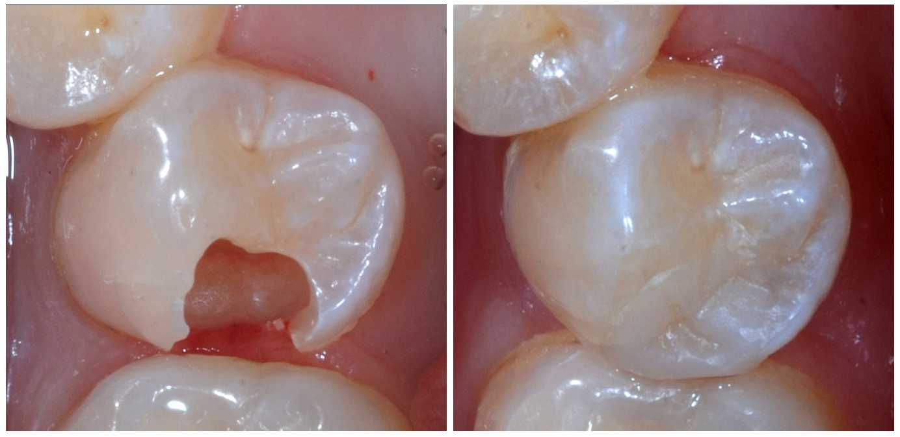
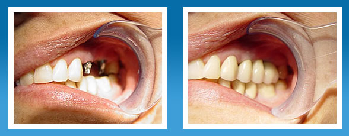
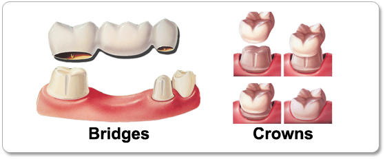

Composite Restorations
Often referred to as a filling, a composite restoration is a way to
restore a tooth damaged by decay back to its normal function and shape. When Dr. Pitcock
completes a composite restoration, he first removes the decayed tooth structure, cleans the
affected area, and then fills the cleaned out cavity with a filling material.
By closing off spaces where bacteria can enter, a filling also helps prevent further decay.
The composite restoration filling material allows Dr. Pitcock to match your natural tooth
shade so the restoration is not visible in your mouth.
Treatment for Gum Disease
Gum disease is inflammation of the gums that can progress to affect the bone that surrounds
and supports your teeth. It is caused by the bacteria in plaque, a sticky, colorless film
that constantly forms on your teeth. If not removed through daily brushing and flossing,
plaque can build up and the bacteria can infect not only your gums and teeth, but eventually
the gum tissue and bone that support the teeth. This can cause them to become loose, fall
out, or have to be removed by a dentist.
A professional cleaning by Carly, our Registered Dental Hygienist, is the only way to remove
plaque that has built up and hardened into tartar. Carly will clean or “scale”
your teeth to remove the tartar above and below the gum line. If your condition is more
severe, a root planing procedure may be performed.
Occlusal Guards
An occlusal guard (also known as a “night guard”) is a horseshoe shaped piece of
plastic which is worn over the teeth to protect them against damage caused by clenching or
grinding. It works by creating a physical barrier between your upper and lower teeth so that
you bite against the plastic rather than wearing down your teeth. Most people are unaware
that they grind or clench their teeth as it usually happens when they are sleeping. It is
often a person’s partner who first notices that they are grinding their teeth. People tend
to go through phases of grinding their teeth, such as during times of stress. It is during
these times that you may need to wear an occlusal night guard to prevent doing permanent
damage to your teeth.
An occlusal guard is made of clear acrylic. It may be either soft or hard acrylic depending
on what your dentist recommends. As it is only made of plastic, your occlusal guard may
become cloudy and discolor over time, but this does not affect the functionality of the
night guard. Occlusal guards can be made for either the upper or lower teeth. Occlusal
guards are usually only worn at night when people are not able to stop themselves from
grinding or clenching their teeth. If you are a severe grinder, Dr. Pitcock may also
recommend that you wear it during the day, but this is not usually required.
Whitening
Whitening is among the most popular cosmetic dental
procedures because it can greatly improve the appearance of your smile. Tooth whitening is a
procedure that uses a whitening gel to bleach your tooth enamel (the outer layer of your
tooth). The color of your natural teeth is created by the reflection and scattering of light
off the enamel, combined with the color of the dentin under it. Your genes affect the
thickness and smoothness of the enamel. Thinner enamel allows more of the color of the
dentin to show through. Having smoother or rougher enamel also affects the reflection of
light and therefore the color.
Every day, a thin coating (pellicle) forms on your enamel and picks up stains. Tooth enamel
also contains pores that can hold stains. The most common reasons for teeth staining are
using tobacco, drinking dark-colored liquids (such as cola, coffee, tea, and red wine) and
improper oral hygiene. Aging also contributes to the yellowing of the teeth because over
time enamel becomes thinner and the dentin becomes darker.
Tooth whitening can be done either in our office or at home. In-office (chairside) whitening
allows Dr. Pitcock to use a more powerful whitening gel. A specialized light activates the
gel and allows bleaching to occur at a faster rate. It is very important to consult Dr.
Pitcock before whitening your teeth to make sure he feels that you are a good candidate for
the procedure.
Sealants
Dental sealants are for children and are usually placed on the chewing (occlusal) surface of the permanent back teeth — the molars and premolars — to help protect them from decay. The chewing surfaces of children’s molar and premolar teeth have grooves, or “fissures”, that make them vulnerable to decay. These fissures can be deep, difficult to clean, and can be narrower than even a single bristle of a toothbrush. Plaque accumulates in these areas, and the acid from bacteria in the plaque attacks the enamel and cavities can develop. Fluoride helps prevent decay and helps protect all the surfaces of the teeth, while dental sealants provide extra protection for the grooved and pitted areas by providing a smooth surface covering over the fissured areas.
Extractions
If a tooth has been broken or damaged by decay, Dr. Pitcock will try to fix it with a
filling, crown or other restorative treatment. Sometimes, though, there is too much damage
for the tooth to be repaired. If this is the case, Dr. Pitcock will recommend that the tooth
be extracted. A very loose tooth also will require extraction if it can’t be saved,
even with bone replacement surgery (bone graft).
Wisdom teeth, also called third molars, are often extracted either before or after they come
in. They commonly come in during the late teens or early 20s. They need to be removed if
they are decayed, causing pain, or have a cyst or infection. These teeth often get stuck in
the jaw (impacted) and do not come in properly. This can irritate the gum, causing pain and
swelling. If you need all of your wisdom teeth removed, it is usually recommended to have
them all removed at the same time.
Root Canal Therapy
A root canal treatment is the removal of the tooth’s pulp (or nerve) – a small,
thread-like tissue in the center of the tooth. Once the damaged, diseased or dead pulp is
removed, the remaining space is cleaned, shaped, and filled. This procedure seals off the
root canal. Years ago, teeth with diseased or injured pulps were removed. Today, root canal
treatment saves many teeth that would otherwise be lost.
The most common causes of pulp damage are: a cracked tooth, a deep cavity, deep decay under
an existing restoration, or an injury to a tooth (such as a severe knock to the tooth,
either recent or in the past). Once the pulp is infected or dead, if left untreated, pus can
build up at the root tip in the jawbone, forming an abcess. An abscess can destroy the bone
surrounding the tooth and cause pain.
As there is no longer a pulp keeping the tooth alive, root-treated teeth can become brittle
and are more prone to fracture. This is an important consideration when deciding whether to
crown or fill a tooth after root canal treatment.
Your treated and restored tooth/teeth can last a lifetime with proper care. Because tooth
decay can still occur in treated teeth, good oral hygiene and regular dental exams are
necessary to prevent further problems.
Implant Restorations
Dental implants are metal posts or frames that are
surgically positioned into the jawbone beneath your gums. Once in place, they allow your
dentist to mount replacement teeth onto them. Because implants fuse to your jawbone, they
provide stable support for artificial teeth. Dentures and bridges mounted to implants
won’t slip or shift in your mouth — an especially important benefit when eating and
speaking. This secure fit helps the dentures and bridges — as well as individual crowns
placed over implants — feel more natural than conventional bridges or dentures.
For some people, ordinary bridges and dentures are simply not comfortable or even possible
due to sore spots, poor ridges or gagging. In addition, ordinary bridges must be attached to
teeth on either side of the space left by the missing tooth, possibly compromising
unnecessary natural tooth structure. An advantage of implants is that no adjacent teeth need
to be prepared or ground down to hold your new replacement tooth/teeth in place.
Crowns / Bridges
 A crown is used to entirely cover or “cap” a damaged tooth.
Besides strengthening a damaged tooth, a crown can be used to improve its appearance, shape,
or alignment. A crown can also be placed on top of an implant to provide a tooth-like shape
and structure for function. Porcelain or ceramic crowns can be matched to the color of your
natural teeth. Other materials include gold and metal alloys, acrylic and ceramic.
Bridges are commonly used to replace one or more missing teeth. They span the space where
the teeth are missing. Bridges are cemented to the natural teeth or implants surrounding the
empty space. These teeth, called abutments, serve as anchors for the bridge. A replacement
tooth, called a pontic, is attached to the crowns that cover the abutments. Porcelain or
ceramic bridges can be matched to the color of your natural teeth.